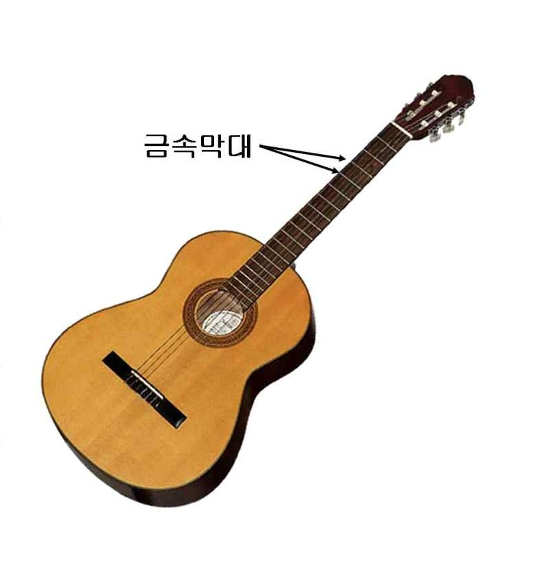

문제 4
사람의 귀는 소리의 높이(진동수)를 인식할 때, 진동수의 로그값에 비례하여 높낮이를 인식한다. 서양 음계에서 1옥타브(Octave, 도|레|미|파|솔|라|시|도)는 12음으로 구성되어 있다. <미>와 <파>, <시>와 <도> 사이는 반음사이, 나머지 사이는 온음사이로, 온음 사이에는 반음이 하나씩 있다. 음이 한 옥타브 올라가면 진동수는 2배가 된다.

(1) <라>음의 진동수는 <솔>음의 진동수의 몇 배인가?
(2) 기타(guitar) 줄의 진동하는 부분의 길이와 음의 진동수는 어떤 관계가 있는가?
(3) 기타에는 손가락으로 줄을 눌러 여러 다른 음을 내기에 편리하도록 금속막대가 배열되어있다. 이 막대들의 위치는 어떤 규칙으로 배열되어 있는가?